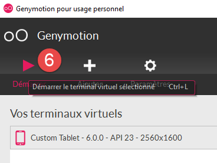
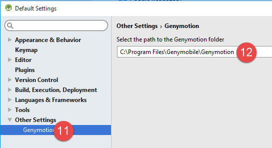
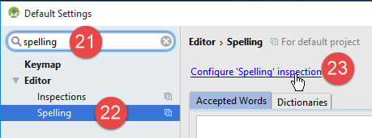
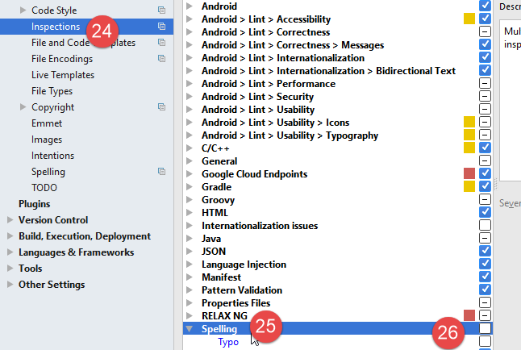
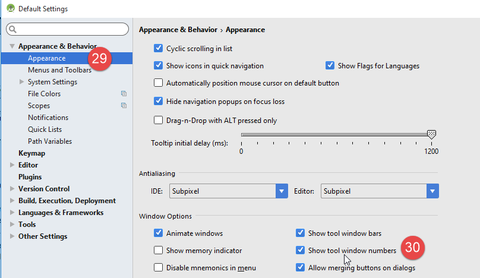
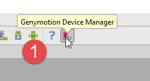
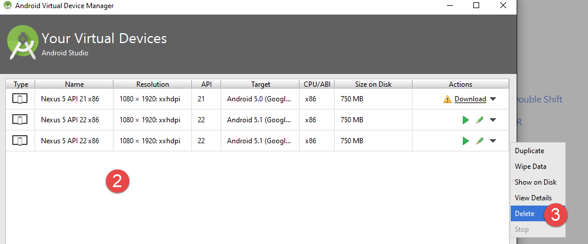

6. Anexos
Aquí explicamos cómo instalar las herramientas utilizadas en este documento en equipos con Windows 7 a 10. El lector debe adaptar estas instrucciones a su propio entorno.
6.1. Instalación del IDE de Arduino
La página web oficial de Arduino es [http://www.arduino.cc/]. Aquí es donde encontrarás el IDE de desarrollo para Arduinos [http://arduino.cc/en/Main/Software]:
 |  |
El archivo descargado [1] es un archivo ZIP que, una vez extraído, crea la estructura de directorios [2]. Puedes iniciar el IDE haciendo doble clic en el archivo ejecutable [3].
6.2. Instalación del controlador de Arduino
Para que el IDE se comunique con un Arduino, el Arduino debe ser reconocido por el ordenador host. Para ello, sigue estos pasos:
- Conecta el Arduino a un puerto USB del ordenador;
- A continuación, el sistema intentará encontrar el controlador para el nuevo dispositivo USB. No lo encontrará. A continuación, debe especificar que el controlador se encuentra en el disco en <arduino>/drivers, donde <arduino> es la carpeta de instalación del IDE de Arduino.
6.3. Probar el IDE
Para probar el IDE, siga estos pasos:
- Inicie el IDE;
- conecta el Arduino al PC mediante su cable USB. Por ahora, no incluyas la tarjeta de red;
 |  |
- en [1], selecciona el tipo de placa Arduino conectada al puerto USB;
- en [2], especifica el puerto USB al que está conectado el Arduino. Para averiguarlo, desconecta el Arduino y toma nota de los puertos. Vuelve a conectarlo y comprueba los puertos de nuevo: el que se ha añadido es el puerto del Arduino;
Ejecuta algunos de los ejemplos incluidos en el IDE:
 |
El ejemplo se carga y se muestra:
 |
Los ejemplos incluidos en el IDE son muy didácticos y están bien comentados. El código de Arduino está escrito en C y consta de dos partes diferenciadas:
- una función [setup] que se ejecuta una vez al iniciar la aplicación, ya sea cuando se «carga» desde el PC host al Arduino, o cuando la aplicación ya está presente en el Arduino y se pulsa el botón [Reset]. Aquí es donde se coloca el código de inicialización de la aplicación;
- una función [loop] que se ejecuta de forma continua (bucle infinito). Aquí es donde va el núcleo de la aplicación.
Aquí,
- la función [setup] configura el pin 13 como salida;
- la función [loop] lo enciende y apaga repetidamente: el LED se enciende y se apaga cada segundo.
 |
El programa que se muestra se carga en el Arduino pulsando el botón [1]. Una vez cargado, se ejecuta y el LED 13 comienza a parpadear de forma indefinida.
6.4. Conexión de red de Arduino
Los Arduino y el PC host deben estar en la misma red privada:
 |
Si solo hay un Arduino, se puede conectar al PC host mediante un simple cable RJ-45. Si hay más de uno, el PC host y los Arduinos se conectarán a la misma red a través de un mini-hub.
El PC host y los Arduinos se colocarán en la red privada 192.168.2.x.
- Las direcciones IP de los Arduinos se configuran mediante el código fuente. Veremos cómo;
- La dirección IP del ordenador host se puede configurar de la siguiente manera:
- Ve a [Panel de control\Red e Internet\Centro de redes y recursos compartidos]:
 |
- En [1], haz clic en el enlace [Conexión de área local]
 |  |
- En [2], vea las propiedades de la conexión;
- En [4], consulte las propiedades IPv4 [3] de la conexión;
 |
- En [5], asigne la dirección IP [192.168.2.1] al ordenador host;
- en [6], asigne la máscara de subred [255.255.255.0] a la red;
- confirme todo en [7].
6.5. Prueba de una aplicación de red
Utilizando el IDE, cargue el ejemplo [Ejemplos / Ethernet / WebServer]:
/*
Web Server
A simple web server that shows the value of the analog input pins.
using an Arduino Wiznet Ethernet shield.
Circuit:
* Ethernet shield attached to pins 10, 11, 12, 13
* Analog inputs attached to pins A0 through A5 (optional)
created 18 Dec 2009
by David A. Mellis
modified 9 Apr 2012
by Tom Igoe
*/
#include <SPI.h>
#include <Ethernet.h>
// Enter a MAC address and IP address for your controller below.
// The IP address will be dependent on your local network:
byte mac[] = {
0xDE, 0xAD, 0xBE, 0xEF, 0xFE, 0xED };
IPAddress ip(192,168,1, 177);
// Initialize the Ethernet server library
// with the IP address and port you want to use
// (port 80 is default for HTTP):
EthernetServer server(80);
void setup() {
// Open serial communications and wait for port to open:
Serial.begin(9600);
while (!Serial) {
; // wait for serial port to connect. Needed for Leonardo only
}
// start the Ethernet connection and the server:
Ethernet.begin(mac, ip);
server.begin();
Serial.print("server is at ");
Serial.println(Ethernet.localIP());
}
void loop() {
// listen for incoming clients
EthernetClient client = server.available();
if (client) {
Serial.println("new client");
// an http request ends with a blank line
boolean currentLineIsBlank = true;
while (client.connected()) {
if (client.available()) {
char c = client.read();
Serial.write(c);
// if you've gotten to the end of the line (received a newline
// character) and the line is blank, the http request has ended,
// so you can send a reply
if (c == '\n' && currentLineIsBlank) {
// send a standard http response header
client.println("HTTP/1.1 200 OK");
client.println("Content-Type: text/html");
client.println("Connection: close");
client.println();
client.println("<!DOCTYPE HTML>");
client.println("<html>");
// add a meta refresh tag, so the browser pulls again every 5 seconds:
client.println("<meta http-equiv=\"refresh\" content=\"5\">");
// output the value of each analog input pin
for (int analogChannel = 0; analogChannel < 6; analogChannel++) {
int sensorReading = analogRead(analogChannel);
client.print("analog input ");
client.print(analogChannel);
client.print(" is ");
client.print(sensorReading);
client.println("<br />");
}
client.println("</html>");
break;
}
if (c == '\n') {
// you're starting a new line
currentLineIsBlank = true;
}
else if (c != '\r') {
// you've gotten a character on the current line
currentLineIsBlank = false;
}
}
}
// give the web browser time to receive the data
delay(1);
// close the connection:
client.stop();
Serial.println("client disconnected");
}
}
Esta aplicación crea un servidor web en el puerto 80 (línea 30) en la dirección IP especificada en la línea 25. La dirección MAC de la línea 23 es la dirección MAC especificada en la placa de red del Arduino.
La función [setup] inicializa el servidor web:
- línea 34: inicializa el puerto serie en el que la aplicación registrará los datos. Supervisaremos estos registros;
- línea 41: se inicializa el nodo TCP/IP (IP, puerto);
- línea 42: se inicia el servidor de la línea 30 en este nodo de red;
- líneas 43–44: registra la dirección IP del servidor web;
La función [loop] implementa el servidor web:
- línea 50: si un cliente se conecta al servidor web, [server].available devuelve ese cliente; de lo contrario, devuelve null;
- línea 51: si el cliente no es null;
- línea 55: mientras el cliente esté conectado;
- línea 56: [client].available es verdadero si el cliente ha enviado caracteres. Estos se almacenan en un búfer. [client].available devuelve verdadero mientras este búfer no esté vacío;
- línea 57: se lee un carácter enviado por el cliente;
- línea 58: este carácter se muestra en la consola de registro;
- línea 62: En el protocolo HTTP, el cliente y el servidor intercambian líneas de texto.
- El cliente envía una solicitud HTTP al servidor web enviando una serie de líneas de texto que terminan con una línea vacía;
- a continuación, el servidor responde al cliente enviando una respuesta y cerrando la conexión;
Línea 62: El servidor no hace nada con los encabezados HTTP que recibe del cliente. Simplemente espera la línea vacía: una línea que contiene únicamente el carácter \n;
- Líneas 64–67: El servidor envía al cliente las líneas de texto estándar del protocolo HTTP. Estas terminan con una línea en blanco (línea 67);
- A partir de la línea 68, el servidor envía un documento a su cliente. Este documento es generado dinámicamente por el servidor y está en formato HTML (líneas 68-69);
- Línea 71: una línea HTML especial que indica al navegador del cliente que actualice la página cada 5 segundos. De este modo, el navegador solicitará la misma página cada 5 segundos;
- Líneas 73-80: el servidor envía los valores de las 6 entradas analógicas de Arduino al navegador del cliente;
- línea 81: se cierra el documento HTML;
- línea 82: salimos del bucle «while» de la línea 55;
- línea 97: se cierra la conexión con el cliente;
- línea 98: el evento se registra en la consola de registro;
- línea 100: volvemos al principio de la función de bucle: el servidor reanudará la escucha de clientes. Mencionamos que el navegador del cliente solicitaría la misma página cada 5 segundos. El servidor estará ahí para responder de nuevo.
Modifica el código de la línea 25 para incluir la dirección IP de tu Arduino, por ejemplo:
Sube el programa al Arduino. Abre la consola de registro (Ctrl-M) (M mayúscula):
 |  |
- en [1], la consola de registro. El servidor se ha iniciado;
- en [2], mediante un navegador, solicitamos la dirección IP del Arduino. Aquí, [192.168.2.2] se traduce por defecto a [http://198.162.2.2:80];
- en [3], la información enviada por el servidor web. Si se consulta el código fuente de la página del navegador, se obtiene:
Aquí podemos ver las líneas de texto enviadas por el servidor. En el lado de Arduino, la consola de registro muestra lo que le envía el cliente:
- líneas 2–9: encabezados HTTP estándar;
- línea 10: la línea vacía que las termina.
Estudia este ejemplo con atención. Te ayudará a comprender la programación de Arduino utilizada en el laboratorio.
6.6. La biblioteca aJson
En el trabajo de laboratorio que vas a realizar, los Arduinos intercambian líneas de texto en formato JSON con sus clientes. Por defecto, el IDE de Arduino no incluye una biblioteca para manejar JSON. Instalaremos la biblioteca aJson disponible en [https://github.com/interactive-matter/aJson].
 |  |
- En [1], descarga la versión comprimida del repositorio de GitHub;
- descomprime la carpeta y copia la carpeta [aJson-master] [2] en la carpeta [<arduino>/libraries] [3], donde <arduino> es la carpeta de instalación del IDE de Arduino;
 |  |  |
- en [4], cambia el nombre de esta carpeta a [aJson];
- en [5], su contenido.
Ahora, inicia el IDE de Arduino:
 |
Comprueba que, en la sección de ejemplos, ahora tienes ejemplos para la biblioteca aJson. Ejecuta y estudia estos ejemplos.
6.7. La tableta Android
Los ejemplos se han probado con la Samsung Galaxy Tab 2.
Para probar los ejemplos en una tableta, primero debes instalar el controlador de la tableta en tu equipo de desarrollo. El controlador para la Samsung Galaxy Tab 2 se puede encontrar en la URL [http://www.samsung.com/fr/support/usefulsoftware/KIES/]:
 |
Para probar los ejemplos, tendrás que conectar la tableta a una red (probablemente Wi-Fi) y conocer su dirección IP en esa red. A continuación te indicamos cómo proceder (Samsung Galaxy Tab 2):
- Enciende la tableta;
- Busca entre las aplicaciones disponibles en la tableta (arriba a la derecha) la que se llama [Ajustes] y tiene un icono de engranaje;
- en la sección de la izquierda, activa el Wi-Fi;
- en la sección de la derecha, selecciona una red Wi-Fi;
- Una vez conectado a la red, pulsa brevemente sobre la red seleccionada. Se mostrará la dirección IP de la tableta. Anótala. La necesitarás;
Sin salir de la aplicación [Ajustes],
- selecciona la opción [Opciones de desarrollador] a la izquierda (en la parte inferior de las opciones);
- Asegúrate de que la opción [Depuración USB] de la derecha esté marcada.
Para volver al menú, toca el icono del centro de la barra de estado de la parte inferior, el que parece una casa. Sin salir de la barra de estado de la parte inferior,
- el icono situado en el extremo izquierdo es el botón Atrás: te lleva a la pantalla anterior;
- el icono situado en el extremo derecho es el administrador de tareas. Puedes ver y gestionar todas las tareas que se están ejecutando actualmente en tu tableta;
Conecta tu tableta al PC con el cable USB incluido.
Conecta el adaptador Wi-Fi a uno de los puertos USB del PC y, a continuación, conéctate a la misma red Wi-Fi que la tableta. Una vez hecho esto, en una ventana de DOS, escribe el comando [ipconfig]:
Tu PC tiene dos tarjetas de red y, por lo tanto, dos direcciones IP:
- la de la línea 9, que es la dirección del PC en la red cableada;
- la de la línea 17, que es la dirección del ordenador en la red Wi-Fi;
Anota estos dos datos. Los necesitarás. Ahora te encuentras en la siguiente configuración:
 |
La tableta tendrá que conectarse a tu PC. Normalmente, tu PC está protegida por un cortafuegos que impide que cualquier dispositivo externo establezca una conexión con ella. Por lo tanto, tendrás que desactivar el cortafuegos. Hazlo mediante la opción [Panel de control\Sistema y seguridad\Cortafuegos de Windows]. A veces también es necesario desactivar el cortafuegos configurado por tu software antivirus. Esto depende de tu programa antivirus.
Ahora, en tu PC, comprueba la conexión de red con la tableta utilizando el comando [ping 192.168.1.y], donde [192.168.1.y] es la dirección IP de la tableta. Deberías ver algo como esto:
Las líneas 4–7 indican que la dirección IP [192.168.1.y] respondió al comando [ping].
6.8. Instalación de un JDK
El JDK más reciente se puede encontrar en la URL [http://www.oracle.com/technetwork/java/javase/downloads/index.html] (junio de 2016). A partir de ahora nos referiremos a la carpeta de instalación del JDK como <jdk-install>.
 |
6.9. Instalación del gestor del emulador Genymotion
La empresa [Genymotion] ofrece un emulador de Android de alto rendimiento. Está disponible en la URL [https://cloud.genymotion.com/page/launchpad/download/] (junio de 2016).
Tendrás que registrarte para obtener una versión para uso personal. Descarga el producto [Genymotion] con la máquina virtual VirtualBox:

A partir de ahora nos referiremos a la carpeta de instalación de [Genymotion] como <genymotion-install>. Inicie [Genymotion]. A continuación, descargue una imagen para una tableta:
 |
- en [1], añada el terminal virtual descrito en [2];
 |
- en [3], configure el terminal;
 |  |
- en [4-5], personalice el terminal para su entorno;
- en [6], inicie el terminal virtual;
Si todo va bien, verás la ventana del emulador de Android:

A veces, el emulador de Android no se inicia. En un equipo con Windows, puedes comprobar los dos puntos siguientes:
- Comprueba que la máquina virtual [Hyper-V] no esté instalada. Si es necesario, desinstálala [1-2];
 |  |
- luego, en el asistente de configuración [Centro de redes y recursos compartidos] [1]:
 |
 |  |
- en [3], seleccione el adaptador o adaptadores de red asociados a la máquina virtual de VirtualBox;
 |
- Comprueba que en [6] esté marcado el controlador de VirtualBox. Repite este paso para todos los adaptadores de red asociados a la máquina virtual de VirtualBox;
6.10. Instalación de Maven
Maven es una herramienta para gestionar dependencias en un proyecto Java y mucho más. Está disponible en la URL [http://maven.apache.org/download.cgi].
 |
Descarga y descomprime el archivo. Nos referiremos a la carpeta de instalación de Maven como <maven-install>.
 |
- En [1], el archivo [conf/settings.xml] configura Maven;
Contiene las siguientes líneas:
<!-- localRepository
| The path to the local repository maven will use to store artifacts.
|
| Default: ${user.home}/.m2/repository
<localRepository>/path/to/local/repo</localRepository>
-->
El valor predeterminado de la línea 4, si —como en mi caso— la ruta {user.home} contiene un espacio (por ejemplo, [C:\Users\Serge Tahé]), puede causar problemas con cierto software. En ese caso, deberías escribir algo como:
<!-- localRepository
| The path to the local repository maven will use to store artifacts.
|
| Default: ${user.home}/.m2/repository
<localRepository>/path/to/local/repo</localRepository>
-->
<localRepository>D:\Programs\devjava\maven\.m2\repository</localRepository>
y en la línea 7, evitaremos una ruta que contenga espacios.
6.11. Instalación del IDE de Android Studio
El IDE Android Studio Community Edition está disponible en [https://developer.android.com/studio/index.html] (junio de 2016):
 |
Instala el IDE y, a continuación, ejecútalo. Sigue los pasos [1-8] para instalar los componentes del SDK Manager que utilizan los ejemplos que vienen a continuación. Si decides instalar componentes más recientes, es probable que recibas advertencias de Android Studio indicando que la configuración del ejemplo hace referencia a componentes del SDK que no existen en tu entorno. En ese caso, puedes seguir las sugerencias que te ofrece el IDE.
 |
 |
 |
- En [9], consulta los detalles del paquete:
 |
- En [11] anterior, los ejemplos utilizaban SDK Build-Tools 23.0.3;
- en [9-12] a continuación, especifique la carpeta donde instaló el gestor del emulador [Genymotion];
 |  |
- En [13-18], configura el tipo de proyecto predeterminado;
 |  |
- en [17], el valor predeterminado suele ser correcto;
- en [18], asegúrate de que tienes JDK 1.8;
A continuación, en [19-26], desactiva la corrección ortográfica, que está configurada en inglés por defecto;
 |  |
 |
- A continuación, en [27-28], elige el tipo de atajos de teclado que desees. Puedes mantener la configuración predeterminada de IntelliJ o elegir la de otro IDE al que estés más acostumbrado;
 |
- A continuación, en [29-30], activa los números de línea en el código;
 |
- A continuación, en [31-34], especifique cómo desea gestionar el primer proyecto al iniciar el IDE y los proyectos posteriores;
 |
Con Android 2.1 (mayo de 2016), la función [Instant Run] a veces causa problemas. En este documento, la hemos desactivado:
 |  |
- en [3-4], se ha desactivado todo;
6.12. Uso de los ejemplos
Los proyectos de Android Studio para los ejemplos están disponibles AQUÍ|. Descárgalos.
 |
Los ejemplos se han creado utilizando los componentes definidos anteriormente:
- JDK 1.8;
- Android SDK Platform 23 para el tiempo de ejecución;
Las siguientes herramientas del SDK:
 |
Si tu entorno no coincide con el descrito anteriormente, tendrás que modificar la configuración del proyecto. Esto puede resultar bastante tedioso. Al principio, probablemente sea más fácil configurar un entorno de trabajo similar al descrito anteriormente.
Inicia Android Studio y, a continuación, abre el proyecto [example-07], por ejemplo:
 |  |
 |
- En [1-3], abre el proyecto [Example-07];
- En [4], compruebe el archivo [local.properties];
 |  |
- en la línea 11 anterior, introduce la ubicación del Administrador del SDK de Android <sdk-manager-install>. Puedes encontrarla siguiendo los pasos [1-4]:
 |
Todos los ejemplos de este documento son proyectos Gradle configurados mediante un archivo [build.gradle] [1-2]:
 |
El archivo [build.gradle] del ejemplo 07 es el siguiente:
buildscript {
repositories {
mavenCentral()
mavenLocal()
}
dependencies {
// replace with the current version of the Android plugin
classpath 'com.android.tools.build:gradle:2.1.0'
// Since Android's Gradle plugin 0.11, you have to use android-apt >= 1.3
classpath 'com.neenbedankt.gradle.plugins:android-apt:1.8'
}
}
apply plugin: 'com.android.application'
apply plugin: 'android-apt'
def AAVersion = '4.0.0'
dependencies {
apt "org.androidannotations:androidannotations:$AAVersion"
compile "org.androidannotations:androidannotations-api:$AAVersion"
compile 'com.android.support:appcompat-v7:23.4.0'
compile 'com.android.support:design:23.4.0'
compile fileTree(dir: 'libs', include: ['*.jar'])
}
repositories {
jcenter()
}
apt {
arguments {
androidManifestFile variant.outputs[0].processResources.manifestFile
resourcePackageName android.defaultConfig.applicationId
}
}
android {
compileSdkVersion 23
buildToolsVersion "23.0.3"
defaultConfig {
applicationId "android.exemples"
minSdkVersion 15
targetSdkVersion 23
versionCode 1
versionName "1.0"
}
buildTypes {
release {
minifyEnabled false
proguardFiles getDefaultProguardFile('proguard-android.txt'), 'proguard-rules.pro'
}
}
compileOptions {
sourceCompatibility JavaVersion.VERSION_1_7
targetCompatibility JavaVersion.VERSION_1_7
}
}
Dependiendo del entorno de Android (SDK y herramientas) que hayas configurado, es posible que tengas que cambiar las versiones en las líneas 8, 21, 22, 38 y 39. Android Studio te ayuda ofreciéndote sugerencias. Lo más sencillo es seguir estas sugerencias.
Se puede acceder a los elementos del archivo [build.gradle] de otra manera:
 |  |
- las distintas pestañas de [3] reflejan los diferentes valores del archivo [build.gradle]. Por lo tanto, puedes configurarlo de esta manera, lo que te permite evitar problemas de sintaxis en el archivo [build.gradle];
Otro punto que hay que comprobar es el JDK utilizado por el IDE [5]:
 |
En [6], comprueba el JDK.
Todos los ejemplos son proyectos Gradle con dependencias que deben descargarse. Para ello, proceda de la siguiente manera:
 |   |
- En [5], compila el proyecto;
Una vez que el proyecto no presente errores, debes crear una configuración de ejecución [1-8]:
 |  |
- En [8], puedes especificar que siempre quieres utilizar el mismo terminal para la ejecución. Por lo general, esta opción se marca para evitar tener que especificar el terminal que se va a utilizar en cada nueva ejecución. Aquí la dejamos sin marcar porque vamos a probar diferentes dispositivos Android;
- Una vez creada la configuración de ejecución, inicie el Administrador del emulador de Android [1-3];
 |  |
- si el emulador de Android no se inicia, compruebe los puntos mencionados en la sección 6.11;
Para iniciar la aplicación en el emulador, proceda de la siguiente manera [1-4]:
 |  |
- en [2], deberías ver el emulador que has iniciado anteriormente;
 |
- en [5], la vista que muestra el emulador;
Ahora conecta una tableta Android a un puerto USB del PC y ejecuta la aplicación en ella:
 |
- En [6], selecciona la tableta Android y prueba la aplicación.
En [7], tenemos terminales virtuales predefinidas. Aprenderemos a añadirlas y eliminarlas.
 |
 |
En la captura de pantalla anterior, todos los dispositivos que aparecen utilizan la API 22. Los vamos a eliminar todos porque queremos utilizar la API 23. Seguimos el procedimiento [2-3] para eliminar los dispositivos.

 |
- En [4-5], añadimos una tableta;
 |
- en [6], seleccionamos una API. Arriba, seleccionamos la API 23 para Windows de 64 bits;
 |
- En [7], se muestra el resumen de la configuración;
- En [8], se puede realizar una configuración más avanzada del terminal virtual;
 |
Una vez completado el asistente, el terminal creado aparece en [9].
Una vez hecho esto, si vuelves a ejecutar [Ejemplo-07], verás ahora la siguiente ventana:
 |
- en [1], aparece el nuevo terminal virtual;
- en [2], puedes crear otras nuevas;
Prueba para determinar cuál es el terminal virtual más adecuado para tu sistema. En este documento, los ejemplos se han probado principalmente con el emulador Genymotion.
Independientemente del terminal virtual elegido, los registros se muestran en la ventana denominada [Logcat] [1-2]:

Revisa estos registros con regularidad. Aquí es donde se informará de las excepciones que provocaron el bloqueo de tu programa.
También puede depurar su programa utilizando herramientas de depuración estándar:
 |  |
- en [2], establece un punto de interrupción haciendo clic una vez en la columna situada a la izquierda de la línea de destino. Al hacer clic de nuevo, se elimina el punto de interrupción;
 |
- en [3], en el punto de interrupción, pulse:
- [F6] para ejecutar la línea sin entrar en los métodos si la línea contiene llamadas a métodos,
- [F5], para ejecutar la línea entrando en los métodos si la línea contiene llamadas a métodos,
- [F8] para continuar hasta el siguiente punto de interrupción;
- [Ctrl-F2] para detener la depuración;
6.13. Instalación del complemento de Chrome [Advanced Rest Client]
En este documento utilizamos el navegador Chrome de Google (http://www.google.fr/intl/fr/chrome/browser/). Le añadiremos la extensión [ Advanced Rest Client]. A continuación te explicamos cómo hacerlo:
- Ve a la [Google Web Store] (https://chrome.google.com/webstore) utilizando el navegador Chrome;
- busca la aplicación [Advanced Rest Client]:
 |
- La aplicación estará entonces disponible para su descarga:
 |
- Para descargarla, tendrás que crear una cuenta de Google. A continuación, la [Google Web Store] te pedirá que confirmes [1]:
 |  |
- En [2], la extensión añadida está disponible en la opción [Aplicaciones] [3]. Esta opción aparece en cada nueva pestaña que abras (CTRL-T) en el navegador.
6.14. Gestión de objetos JSON en Java
De forma transparente para el desarrollador, el marco [Spring MVC] utiliza la biblioteca JSON [Jackson]. Para ilustrar qué es JSON (JavaScript Object Notation), presentamos aquí un programa que serializa objetos en JSON y realiza la operación inversa deserializando las cadenas JSON generadas para recrear los objetos originales.
La biblioteca «Jackson» te permite construir:
- la cadena JSON de un objeto: new ObjectMapper().writeValueAsString(object);
- un objeto a partir de una cadena JSON: new ObjectMapper().readValue(jsonString, Object.class).
Ambos métodos pueden lanzar una IOException. A continuación se muestra un ejemplo.
 |
El proyecto anterior es un proyecto Maven con el siguiente archivo [pom.xml];
<?xml version="1.0" encoding="UTF-8"?>
<project xmlns="http://maven.apache.org/POM/4.0.0"
xmlns:xsi="http://www.w3.org/2001/XMLSchema-instance"
xsi:schemaLocation="http://maven.apache.org/POM/4.0.0 http://maven.apache.org/xsd/maven-4.0.0.xsd">
<modelVersion>4.0.0</modelVersion>
<groupId>istia.st.pam</groupId>
<artifactId>json</artifactId>
<version>1.0-SNAPSHOT</version>
<dependencies>
<dependency>
<groupId>com.fasterxml.jackson.core</groupId>
<artifactId>jackson-databind</artifactId>
<version>2.3.3</version>
</dependency>
</dependencies>
</project>
- líneas 12-16: la dependencia que incluye la biblioteca «Jackson»;
La clase [Person] es la siguiente:
package istia.st.json;
public class Personne {
// data
private String nom;
private String prenom;
private int age;
// manufacturers
public Personne() {
}
public Personne(String nom, String prénom, int âge) {
this.nom = nom;
this.prenom = prénom;
this.age = âge;
}
// signature
public String toString() {
return String.format("Personne[%s, %s, %d]", nom, prenom, age);
}
// getters and setters
...
}
La clase [Main] es la siguiente:
package istia.st.json;
import com.fasterxml.jackson.databind.ObjectMapper;
import java.io.IOException;
import java.util.HashMap;
import java.util.Map;
public class Main {
// the serialization / deserialization tool
static ObjectMapper mapper = new ObjectMapper();
public static void main(String[] args) throws IOException {
// creation of a person
Personne paul = new Personne("Denis", "Paul", 40);
// json display
String json = mapper.writeValueAsString(paul);
System.out.println("Json=" + json);
// person instantiation from Json
Personne p = mapper.readValue(json, Personne.class);
// person display
System.out.println("Personne=" + p);
// a picture
Personne virginie = new Personne("Radot", "Virginie", 20);
Personne[] personnes = new Personne[]{paul, virginie};
// json display
json = mapper.writeValueAsString(personnes);
System.out.println("Json personnes=" + json);
// dictionary
Map<String, Personne> hpersonnes = new HashMap<String, Personne>();
hpersonnes.put("1", paul);
hpersonnes.put("2", virginie);
// json display
json = mapper.writeValueAsString(hpersonnes);
System.out.println("Json hpersonnes=" + json);
}
}
Al ejecutar esta clase se obtiene el siguiente resultado en pantalla:
Puntos clave del ejemplo:
- el objeto [ObjectMapper] necesario para las transformaciones JSON/Object: línea 11;
- la transformación [Person] --> JSON: línea 17;
- la transformación de JSON a [Person]: línea 20;
- la [IOException] lanzada por ambos métodos: línea 13.
6.15. Instalación de [ WampServer]
[WampServer] es un paquete de software para desarrollar en PHP / MySQL / Apache en un equipo con Windows. Lo utilizaremos exclusivamente para el SGBD MySQL.
 |  |
- En la página web de [WampServer] [1], elija la versión adecuada [2],
- El ejecutable descargado es un instalador. Se le solicitarán varios datos durante la instalación. Estos no tienen que ver con MySQL, por lo que puede ignorarlos. Al final de la instalación aparecerá la ventana [3]. Inicie [WampServer],
 |  |
- En [4], el icono [WampServer] aparece en la barra de tareas, en la parte inferior derecha de la pantalla [4];
- al hacer clic en él, aparece el menú [5]. Este te permite gestionar el servidor Apache y el SGBD MySQL. Para gestionar este último, utiliza la opción [PhpMyAdmin],
- que abre la ventana que se muestra a continuación,

No daremos muchos detalles sobre el uso de [PhpMyAdmin]. En el documento mostramos cómo utilizarlo.